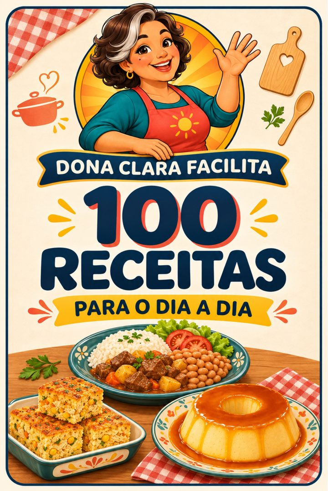
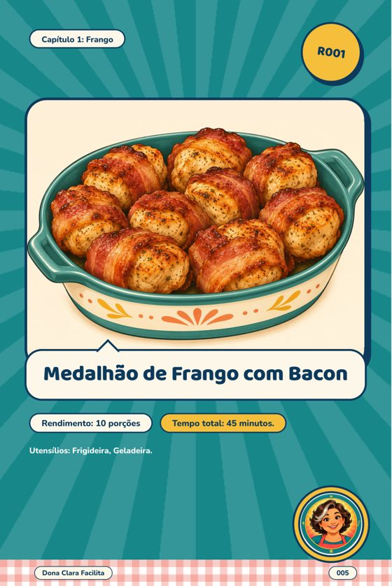
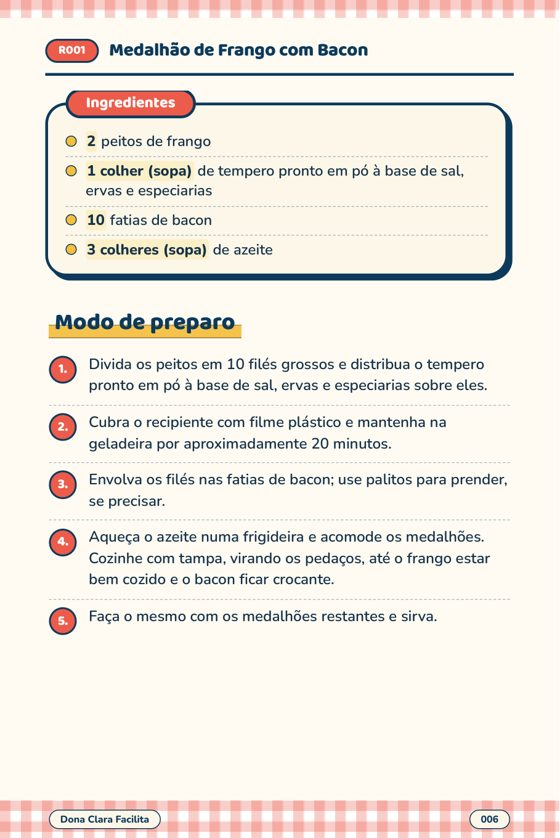
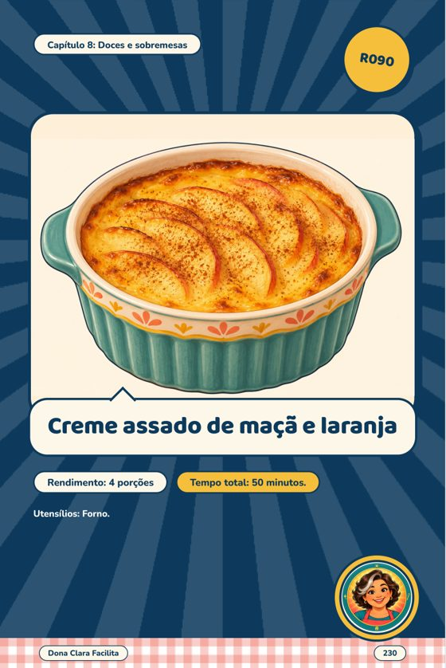
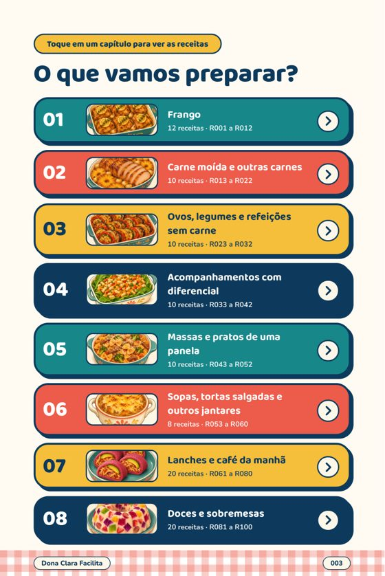

Cansada de inventar o cardápio do almoço e do jantar? Escolha entre 100 receitas prontas.
Um e-book em PDF com 100 receitas fáceis e fora do básico para almoço, jantar, lanches e doces. Você abre no celular e escolhe o prato de hoje sem procurar.

Quero minhas 100 receitasA pergunta de todo dia
São cinco da tarde e a pergunta volta: o que vai ser hoje? Aí começa a maratona:
- Você procura no celular e acha receita espalhada em dez sites diferentes.
- Tem anúncio no meio do preparo e a página some quando a tela apaga.
- No fim, cansada, você faz o mesmo prato de sempre.
O e-book da Dona Clara junta tudo num arquivo só: receitas escolhidas por serem fáceis e saírem do básico, no mesmo formato, com tudo o que você precisa na página.
O que muda na sua cozinha
O que tem dentro
- 1. Frango 12 receitas
- 2. Carne moída e outras carnes 10 receitas
- 3. Ovos, legumes e refeições sem carne 10 receitas
- 4. Acompanhamentos com diferencial 10 receitas
- 5. Massas e pratos de uma panela 10 receitas
- 6. Sopas, tortas salgadas e outros jantares 8 receitas
- 7. Lanches e café da manhã 20 receitas
- 8. Doces e sobremesas 20 receitas
Alguns pratos que você vai encontrar
- Sumário clicável: toque no capítulo, depois no nome da receita, e você chega direto nela.
- Ingredientes em lista, com a quantidade em destaque, para conferir o que falta antes de começar.
- Modo de preparo numerado, na ordem em que as coisas acontecem.
- Rendimento e tempo total no início de cada receita.
- Uma ilustração por receita, para você saber o que esperar do prato.
- Feito para o celular: página vertical, letra grande, sem precisar dar zoom.
Dê uma olhada por dentro
Estas são páginas reais do e-book. Deslize para ver.




Para quem faz sentido
- Quem cozinha em casa e quer variar o cardápio da semana.
- Quem gosta de receita com ingredientes comuns, mas com um toque diferente.
- Quem prefere ter tudo num arquivo só, no celular, em vez de procurar de novo toda vez.
Não é um plano alimentar nem material de dieta ou saúde: é um livro de receitas.
Dona Clara Facilita, 100 receitas para o dia a dia
- E-book em PDF com 100 receitas
- 60 de almoço e jantar, 20 de lanches e café da manhã, 20 de doces
- 8 capítulos e sumário clicável
- Acesso por e-mail depois da confirmação do pagamento
- Garantia de 7 dias
Pagamento único, sem mensalidade. Dá menos de 25 centavos por receita.
Quero minhas 100 receitasPagamento pela Cakto.
Garantia de 7 dias
Se você se arrepender ou achar que o e-book não é para você, peça o reembolso em até 7 dias corridos depois da compra, pelo canal da Cakto, e recebe o seu dinheiro de volta.
Perguntas frequentes
É um livro físico?
Não. É um e-book digital em PDF. Não há envio pelo correio.
Como eu recebo?
Depois da confirmação do pagamento, o acesso chega no e-mail usado na compra. Se não encontrar, olhe a caixa de spam.
Dá para ler no celular?
Dá. O PDF foi montado em página vertical, com letra confortável para a tela do celular. Também abre no computador.
As receitas são difíceis?
Não. Foram escolhidas por serem fáceis e usarem ingredientes comuns, com um toque fora do básico. Cada uma mostra o tempo total, para você escolher conforme o dia.
Preciso de equipamentos especiais?
Cada receita informa os utensílios que usa logo no início. As receitas usam o que normalmente existe numa cozinha de casa, como panelas, frigideira e forno, conforme a receita.
Tem mensalidade?
Não. O pagamento é único e o e-book fica com você.
E se eu não gostar?
Você pode pedir reembolso em até 7 dias corridos após a compra, pelo canal de reembolso da Cakto: reembolso.cakto.com.br.
Hoje, o jantar já pode ter resposta
Se a pergunta de todo dia é "o que vai ser hoje?", o e-book responde com 100 opções no mesmo lugar.
Quero minhas 100 receitas